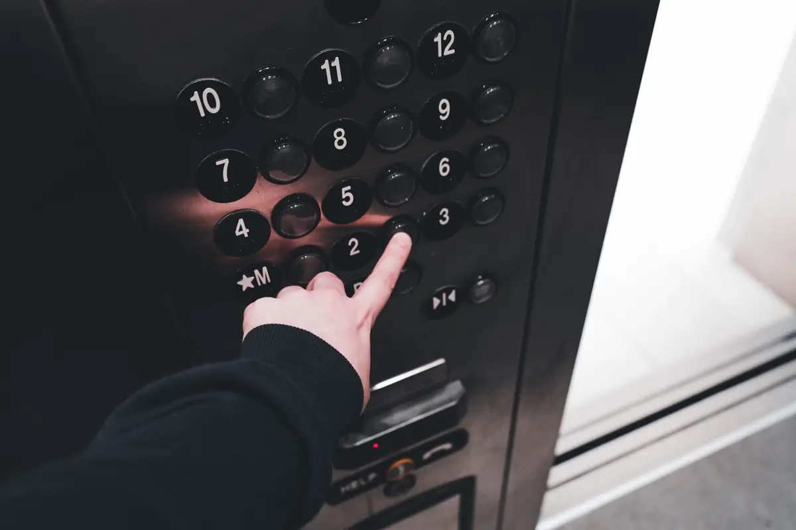
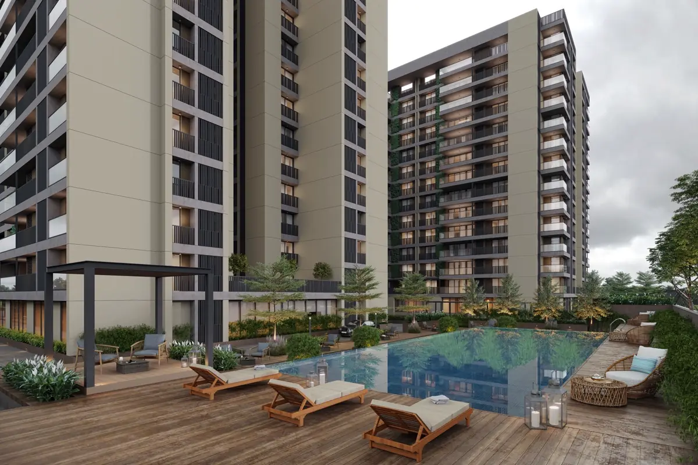
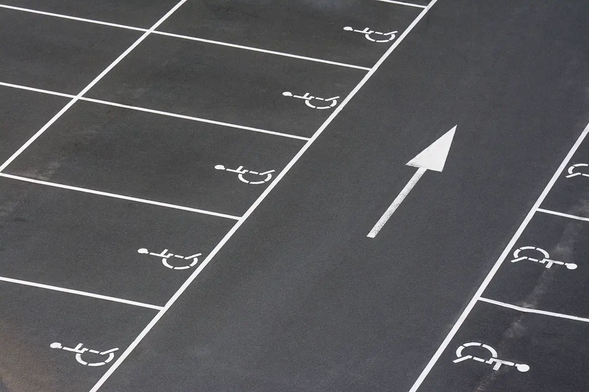

Quando o condomínio precisa de laudo de acessibilidade
Em condomínio a obrigação recai sobre a área comum: o caminho da calçada até a porta de cada unidade e até cada espaço de uso coletivo. A Lei 10.098/2000 já previa percurso acessível em edifício de uso privado com elevador, e a Lei Brasileira de Inclusão (Lei 13.146/2015) reforçou o dever. A régua técnica é a ABNT NBR 9050.
O pedido chega por três caminhos: um morador ou visitante com deficiência ou mobilidade reduzida que não consegue entrar ou circular; uma obra de reforma da fachada, do hall ou da garagem que precisa sair certa; ou uma cobrança formal. Esta página trata do condomínio. Para loja e estabelecimento comercial, veja o laudo de acessibilidade para alvará.
Áreas vistoriadas no condomínio
Acesso de pedestres e portaria
Portão de pedestres, interfone e botoeira ao alcance de quem está sentado, desnível entre a calçada e o pátio, rampa até o hall e porta de entrada com vão livre e soleira compatíveis. Em boa parte dos prédios da Grande Vitória o problema está aqui: dois ou três degraus entre a calçada e o térreo, sem alternativa.
Circulação interna, escadas e elevador
Largura de corredor, corrimão em duas alturas, piso tátil no início e no fim da escada, contraste nos degraus, cabine do elevador, botoeira com relevo e sinalização sonora de pavimento. Quando o elevador não chega ao térreo ou à garagem, o desnível que sobra entra no plano de adequação.

Garagem e vagas
Existência de vaga acessível, faixa de circulação lateral, percurso da vaga até o elevador sem degrau e sinalização vertical e horizontal. Vaga de uso comum para visitante com deficiência costuma não existir.
Lazer: salão, piscina, academia e playground
Rota até cada espaço, sanitário acessível do salão de festas, acesso à borda da piscina, circulação entre equipamentos da academia e piso do parquinho. O brinquedo e o piso do playground seguem norma própria e entram no laudo de playground.

O plano de adequação que a assembleia consegue aprovar
Síndico não aprova obra com uma lista de cinquenta não conformidades soltas. O laudo entrega as pendências agrupadas por prioridade e por frente de obra, com solução técnica para cada uma — o que permite aprovar em etapas e cotar com empreiteiros sobre o mesmo escopo.
| Prioridade | Critério | Exemplo típico |
|---|---|---|
| 1 — impede o uso | Barreira que impede a pessoa de entrar ou chegar à unidade | Degraus entre calçada e hall sem rampa nem plataforma |
| 2 — risco | Situação com risco de queda ou acidente | Escada sem corrimão, rampa sem guarda-corpo, piso escorregadio |
| 3 — autonomia | Uso possível, mas só com ajuda de terceiros | Interfone alto, porta pesada, sanitário do salão sem barras |
| 4 — sinalização | Informação e orientação | Piso tátil, símbolo de acesso, numeração em relevo |
Quando a solução para o desnível é uma rampa ou passarela metálica, ela pode ser executada junto com outros serviços de manutenção predial, e a estrutura segue o mesmo cuidado de qualquer montagem de estrutura metálica exposta à maresia.

Morador com deficiência pediu adequação: e agora?
O pedido de um morador não é favor da administração — a área comum precisa ser utilizável por todos. O caminho mais seguro para o síndico é contratar a vistoria logo, registrar a resposta ao morador com o laudo e o plano, e levar à assembleia uma proposta com prazos. Isso documenta a boa-fé do condomínio e evita que o assunto termine em notificação do Ministério Público.
O laudo também protege o condomínio na contratação: a empreiteira executa sobre um escopo técnico com medidas, e a conferência final é feita contra o mesmo documento, com a ART de acessibilidade do responsável técnico.
Perguntas frequentes sobre acessibilidade em condomínio
Condomínio residencial é obrigado a ter acessibilidade?
Na área comum, sim. A Lei 10.098/2000 prevê percurso acessível em edifício de uso privado com elevador, ligando as unidades ao exterior e às dependências de uso comum, e a Lei 13.146/2015 reforçou essa obrigação. Prédio antigo não fica dispensado: a NBR 9050 admite soluções próprias para edificação existente, e o laudo aponta a viável em cada caso.
Quem paga a obra de acessibilidade no condomínio?
Por ser área comum, a obra é despesa do condomínio e passa pela assembleia na forma prevista na convenção. O laudo com plano de adequação por prioridade é o que permite aprovar em etapas e comparar orçamentos sobre o mesmo escopo.
Prédio com degraus na entrada precisa fazer rampa?
Precisa oferecer um percurso sem degrau entre a calçada e o hall. A rampa é a solução mais comum, mas nem sempre cabe na largura disponível; nesses casos a plataforma elevatória ou outra solução técnica entra no laudo, com a justificativa por escrito.
A garagem do condomínio precisa de vaga acessível?
O percurso da garagem até o elevador precisa ser acessível e a vaga acessível deve existir conforme a necessidade dos usuários, com faixa lateral de circulação e sinalização. A forma de destinar a vaga — fixa, rotativa ou para visitante — é decisão da assembleia, e o laudo indica a posição tecnicamente adequada.
Quanto tempo leva a vistoria de acessibilidade em condomínio?
Um prédio de uma torre costuma ser vistoriado em meio dia. Condomínio-clube com várias torres, garagem em subsolo e área de lazer grande leva de um a dois dias de campo. O laudo com o plano de adequação sai em geral entre sete e doze dias úteis.
Acessibilidade em condomínios da Grande Vitória
Vistoria NBR 9050 da área comum de condomínios residenciais e comerciais:
Vai levar a acessibilidade para a assembleia?
Informe o número de torres e as áreas de lazer. Retornamos com escopo da vistoria, prazo e valor.